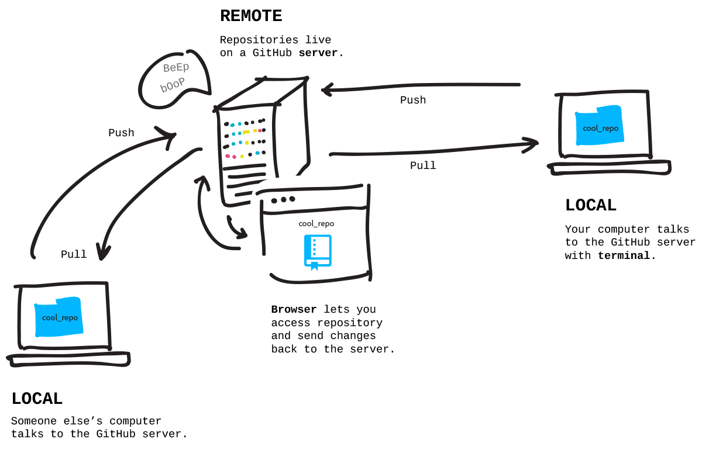

关卡内容：
把电脑里的 repository 和 remote 的 repository连接起来，并 push 电脑上的修改。
Remotes
当项目传到 GitHub 上面，它会被存储在 GitHub 的主机上。这个项目就变成了 remote repository，因为项目现在 GitHub 的主机上也有一份了，所以叫做 remote。当你把电脑上的程序修改 push到 remote，这就叫做同步。
其他人可以通过 pull 你的 remote repository 来取得项目的最新版本，存储到他们的电脑上。这样一来，大家就可以一起修改同一个项目，而不需要用 USB 或 Email 等其他方式来取得项目的最新进度。

步骤：建立一个 Remote Repository
你想要把电脑上的版本和存在 GitHub.com 上的 remote 版本做同步。所以我们先在 GitHub 上建立一个新的 remote repository。
- 到 github.com 登录，然后按一下右上角的 '+' 号来新建一个 repository。
- 取一个名字，最好和你电脑上的程序名称一样，也就是 'hello-world'，并且给它一个简短的说明。
- 设定为 public（公开）。
- 不要勾选 'initialize with a README'，因为我们已经在电脑上的版本建立了一个文件，叫做 'readme.txt'。
- 也不要修改 .gitignore 和 license 的设定，保留原先 'none' 的设定就好。
- 按下 'create repository'！
Readme（读我文件）、.gitignore 和 License（著作权声明）
在开源软件中，这些是你将会常常见到的文件。
readme 通常是用来解释一个程序的作用、使用方法以及如何贡献程序代码（但有时候这部分也会另外用一个 CONTRIBUTING.md 来说明）。
.gitignore 则是要忽略的文件清单，这是用来告诉 Git，当在做版本控制记录的时候，不要理会这些文件。例如，当某个文件中包含密码的時候，我们就不希望 Git 记录它们下来。
License（著作权声明）是用来声明一个程序可以、或不可以被怎么样的使用。你可以到
choosealicense.com 参考一些范例。
但就现在在做的练习来说，我们暂时不需要著作权声明。
步骤：把电脑上的 repository 和 remote repository 连接在一起
现在我们已经在 remote（GitHub 上）新建了一个 repository。在 repository 的页面上你会看到一个 'Quick Setup' 的部份，确认选择的网址是 'HTTP'，而不是 'SSH'，右边的框框就是主机 remote repository 在 GitHub 主機上的地址。
回到终端，在我们刚刚初始化过 Git 的 'hello-world' 的文件夹里头，我们需要告诉 Git 这个 remote 的地址。同一个 Git 项目中，可以有很多不同的 remote，所以每一个 remote 都需要一个名字。而最主要、原始的那一个，通常都是叫做 origin。
$ git remote add origin <URLFROMGITHUB>
你电脑上的 repository 现在知道了项目有一个在 GitHub 上的 remote，叫做 'origin'。你可以想象这就好像是把一个电话号码配上一个名字一样，这样当你要打电话的时候，就不用记得号码了。
备注：
如果你有安装 GitHub for Windows，Git 初始化的时候就会直接设定了一个叫做 'origin' 的 remote，所以你不需要新增，只要设定这个 'origin' remote 的地址就好了：
$ git remote set-url origin <URLFROMGITHUB>
步骤：把你的修改 Push 到 remote
接下来你需要 push（传送）所有你在电脑上做的修改到 GitHub 上的 remote。通常你会希望 remote 的程序版本和电脑上的程序版本是一样的。
Git 有一个 branch 系统，让你可以同时修改一个程序的不同功能，之后会再深入介绍。系统会预设一个名称给最初的 branch，通常就会叫做 'master'。当你 push（或之后 pull）一个项目的时候，你必须要告訴 Git 你想要的是哪一个 remote 上的哪一个 branch 的进度。
也就是说，我们现在想要把 'master' branch 的程序传送到先前新增的 'origin' remote。
$ git push origin master
完成之后，你现在就可以回到 GitHub 的 repository 页面，重新整理。哇哇哇！程序是不是都同步了呢？恭喜你建立了第一个公开的 repository！
确认你完成了所有步骤：
git-it verify
前往下一个关卡：
git-it
提示
- 新增 remote 连接
$ git remote add <REMOTENAME>
- 帮一个 remote 设定地址
$ git remote set-url <REMOTENAME>
- Pull remote 的程序
$ git pull <REMOTENAME> <BRANCHNAME>
- 看你有哪些 remote 连接
$ git remote -v
- Push 电脑上的程序到 remote
$ git push <REMOTENAME>